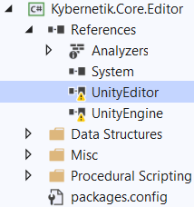
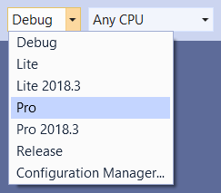

- Weaver Pro includes its full source code at Assets/Plugins/Weaver/Source Code.zip.
- Weaver Lite does not include the source code, but you can download the source of Kybernetik.Core.dll directly from here.
Weaver is released as a set of pre-compiled DLLs in order to ensure that any compile-errors caused by the scripts it procedurally generates (the Project Constants scripts or any others you might make) cannot prevent Weaver itself from compiling, because that would prevent it from re-generating the scripts once the issue is fixed. Unfortunately this makes it inconvenient to actually modify Weaver because you need to do it outside Unity by following these instructions.
Extraction
The Source Code.zip must be extracted outside your Assets folder and contains a solution (.sln file) which can be opened and compiled by most IDEs (such as Visual Studio). Each of the projects in the solution has a Post-Build event set up to automatically copy its DLL into the Unity project when it recompiles. For this to target the correct folder, you must extract the Source Code folder into your Unity project folder (the same folder as Assets, Library, etc.):
- Unity Project: .../Assets/Plugins/Weaver.
- Source Code: .../Source Code/Weaver Source Code/Weaver.sln.
Otherwise, each time you recompile the DLLs, you will need to go into .../Weaver Source Code/Project Name/bin/ for each project and manually copy the Project Name.dll, .mdb, and .xml to the corresponding folder in your Unity project.
Unity DLLs
The projects need to reference UnityEngine.dll and UnityEditor.dll in order to be compiled (the .Runtime projects only reference UnityEngine.dll). However, they cannot simply be included with the source code according to the Asset Store rules and cannot be located automatically since their location differs according to your Unity version.
This means that their references will be missing (as shown on the right) so you need to remove them and add new references to the corresponding files in your Unity installation directory: .../Editor/Data/Managed. Or you can copy those DLLs into the Weaver Source Code directory and reference them from there to be able to easily replace them if you change to a new Unity version.
You need to replace those broken references for each of the projects in the solution.
Solution Configuration
You will also need to set the Solution Configuration according to your Unity version:
Profor any Unity version older than 2018.3.Pro 2018.3for Unity 2018.3 or newer.
Missing Files
Unfortunately, the source code released in Weaver v5.1 was not configured correctly and contains references to NuGet packages will probably not not be installed on your system. This means you will need to open each of the 4 .csproj files using a text editor and removing the following lines:
// Near the top:
<CodeAnalysisRuleSet>..\..\Kybernetik.ruleset</CodeAnalysisRuleSet>
...
// Near the bottom:
<ItemGroup>
<Analyzer Include="..\..\packages\codecracker.CSharp.1.1.0\analyzers\dotnet\cs\CodeCracker.CSharp.dll" />
<Analyzer Include="..\..\packages\SwitchAnalyzer.0.6.6\analyzers\dotnet\cs\SwitchAnalyzer.dll" />
</ItemGroup>
You will also need to place this command file in the Source Code folder in order for the Post-Build events to work: CopyToUnity.cmd (it's just a text file, so feel free to open it up to see what it does).
These issues will be corrected in future releases.
Compilation
Once the solution is correctly set up, you will be able to make any desired modifications to the source code using your IDE, rebuild the solution so that the Post-Build events copy the compiled DLLs over to your Unity project, then return to Unity so that it can import the newly modified files.